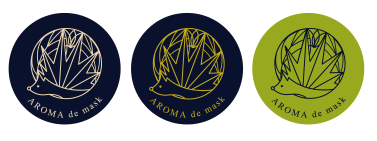

それは小さくも最上の香り空間
それは小さくも
最上の香り空間
「AROMA de mask（アロマデマスク）」に使われる精油は、
アロマの専門家川人紫先生監修のもとすべてオリジナルでブレンドしています。

アロマの専門家
川人紫さんの独自ブレンド
植物は菌やウィルス、病害虫などが嫌がる香りを作り出して身を守ります。この植物の香りを、私たちはアロマセラピー（芳香療法）として健康維持に役立てています。「AROMA de mask（アロマデマスク）」は植物の香りを凝縮したエッセンシャルオイル（精油）を手軽に取り入れることができます。シールをマスクに貼って、植物の香りの力を実感していただければ幸いです。
Ph.D（学術博士）。1994年アロマセラピー用エッセンシャルオイルの輸入卸会社を設立。
97年（一社）日本アロマセラピー学会の初代事務局長に就任。現在は桜サイエンスビューティー（株）代表を務める傍ら、（一社）日本ガーデンセラピー協会理事、熊本大学大学院客員教授として学術分野にも関わっている。
「アロマ de マスク」独自のこだわり
「アロマ de マスク」
独自のこだわり
マスク用に開発した特別なシール
アロマdeマスク（アロマデマスク）は、マスクに貼ってちょうどよく香るように設計された“マスク専用”のアロマシール。香りが強すぎたり弱すぎることはありません。
マスク用に開発した特別なシール
アロマdeマスク（アロマデマスク）は、マスクに貼ってちょうどよく香るように設計された“マスク専用”のアロマシール。香りが強すぎたり弱すぎることはありません。
3 種のシールでマスクのワンポイントに。

アロマdeマスク（アロマデマスク）のおしゃれなパッケージデザインは持つ人や場所を選びません。老若男女問わずご使用いただけます。
上質な立体布マスク
効果を最大限感じていただくために、長時間つけても耳が痛くなりにくく、心地よい柔らかさの布製マスクに仕上げました。風邪・花粉症対策にも安心してご使用いただけます。
こちらの布マスクは 「AROMA de mask （アロマデマスク）布マスクセット」 にのみ付属します
上質な立体布マスク
効果を最大限感じていただくために、長時間つけても耳が痛くなりにくく、心地よい柔らかさの布製マスクに仕上げました。風邪・花粉症対策にも安心してご使用いただけます。
こちらの布マスクは 「AROMA de mask （アロマデマスク）布マスクセット」 にのみ付属します